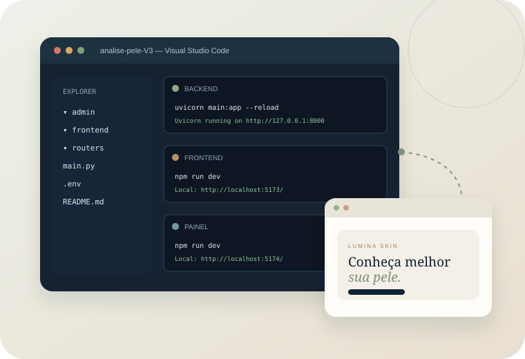
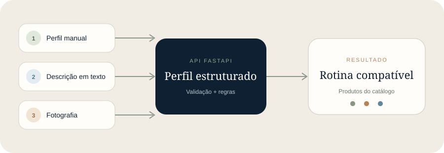

Python 3.12
Executa o FastAPI, o banco SQLite e a integração com o Gemini. Durante a instalação, marque Add Python to PATH.
Ao final, você terá três partes rodando no computador: a API que faz o trabalho, o site que o visitante usa e o painel que administra os produtos.

Esta parte é feita uma vez. Depois, iniciar o projeto será bem mais curto.
O projeto não é um único arquivo: Python executa a API e Node.js executa as duas interfaces React. O VS Code permite manter tudo organizado em uma pasta e em três terminais.
Executa o FastAPI, o banco SQLite e a integração com o Gemini. Durante a instalação, marque Add Python to PATH.
Inclui o comando npm, usado para instalar e iniciar o site e o painel.
Será usado para abrir a pasta, editar o arquivo .env e manter os terminais visíveis.
python --version, node --version e code --version. Se os três mostrarem uma versão, está pronto.analise-pele-V3.admin, frontend, routers e arquivos como main.py e requirements.txt. Se o VS Code mostrar apenas outra pasta com o mesmo nome, abra essa pasta interna.Ela recebe os pedidos das interfaces, acessa a IA, consulta o banco e devolve respostas.
No VS Code, use o menu Terminal → New Terminal ou pressione Ctrl + `. Confira se o caminho mostrado termina na pasta raiz do projeto.
A pasta .venv separa as bibliotecas deste projeto das demais instalações do computador.
python -m venv .venv
.venv\Scripts\activate
python -m pip install -r requirements.txtQuando a ativação funcionar, (.venv) aparecerá antes do caminho no terminal. A instalação pode demorar alguns minutos.
copy .env.example .envNo explorador lateral do VS Code, abra .env. Para usar análises por texto e foto, coloque uma chave válida do Google AI Studio após o sinal de igual:
GEMINI_API_KEY=cole_sua_chave_real_aqui
GEMINI_MODEL=gemini-3.5-flash-lite
APP_ENV=development
DATABASE_PATH=produtos.db
CORS_ORIGINS=http://localhost:5173,http://localhost:5174.env. A chave fica somente no backend. Não coloque a chave em arquivos da pasta frontend ou em código JavaScript.python criar_banco.py
python popular_catalogo.py --aplicarO primeiro comando cria as tabelas. O segundo adiciona o catálogo fictício da Lumina. Execute a carga apenas quando quiser essa demonstração; um projeto próprio pode começar com banco vazio.
uvicorn main:app --reloadQuando aparecer Uvicorn running on http://127.0.0.1:8000, segure Ctrl e clique no endereço. Para ver e testar as rotas, abra http://127.0.0.1:8000/docs.
A interface Lumina conversa com a API que já está rodando na porta 8000.
Não escreva novos comandos no terminal da API. Clique no símbolo + do painel de terminais do VS Code para abrir um segundo terminal.
cd frontend
npm install
copy .env.example .env
npm run devO arquivo criado deve conter:
VITE_API_URL=http://127.0.0.1:8000Local: http://localhost:5173/. Segure Ctrl e clique nesse endereço. O número pode mudar se a porta já estiver em uso; use sempre o link realmente mostrado.O comando npm install é necessário apenas na primeira instalação ou quando as dependências mudarem. npm run dev é o comando que liga o site.
Na v3.9, o painel é local e abre no navegador como uma segunda aplicação.
Abra um terceiro terminal. Como os novos terminais normalmente começam na raiz, execute:
cd admin
npm install
copy .env.example .env
npm run devO arquivo de ambiente do painel também deve apontar para a API local:
VITE_API_URL=http://127.0.0.1:8000Cadastra, edita, filtra, ativa e desativa produtos; também envia imagens para o backend.
Não é um painel público protegido por login. Use esta edição apenas localmente.
Se o site já ocupou a porta 5173, o Vite provavelmente exibirá http://localhost:5174/. Use o endereço mostrado no terminal.
Use esta ordem para identificar rapidamente em qual parte está um possível problema.

Você não precisa reinstalar tudo. Apenas ligue cada parte novamente.
Na raiz do projeto:
.venv\Scripts\activate
uvicorn main:app --reloadEm outro terminal, a partir da raiz:
cd frontend
npm run devEm outro terminal, a partir da raiz:
cd admin
npm run devPara desligar, clique em cada terminal e pressione Ctrl + C. Fechar o navegador não desliga os servidores.
Abra somente o item que corresponde ao que apareceu na sua tela.
.venv e reinstale as dependências com python -m pip install -r requirements.txt. Confira também se o terminal está na raiz.GEMINI_API_KEY válida no .env. Após corrigir, pare e reinicie o Uvicorn.frontend\.env contém exatamente VITE_API_URL=http://127.0.0.1:8000. Reinicie o Vite depois de alterar o arquivo.CORS_ORIGINS do backend e reinicie a API.python popular_catalogo.py --aplicar.Use-os para conhecer o projeto sem manter seu computador ligado.